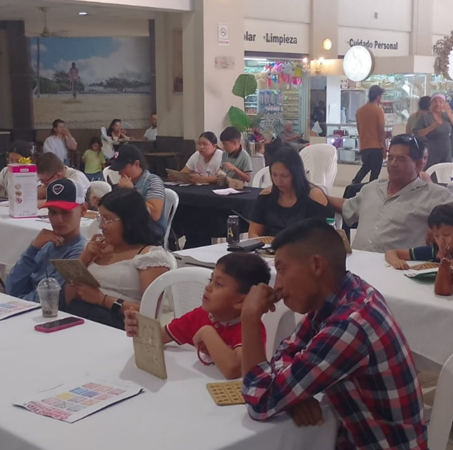
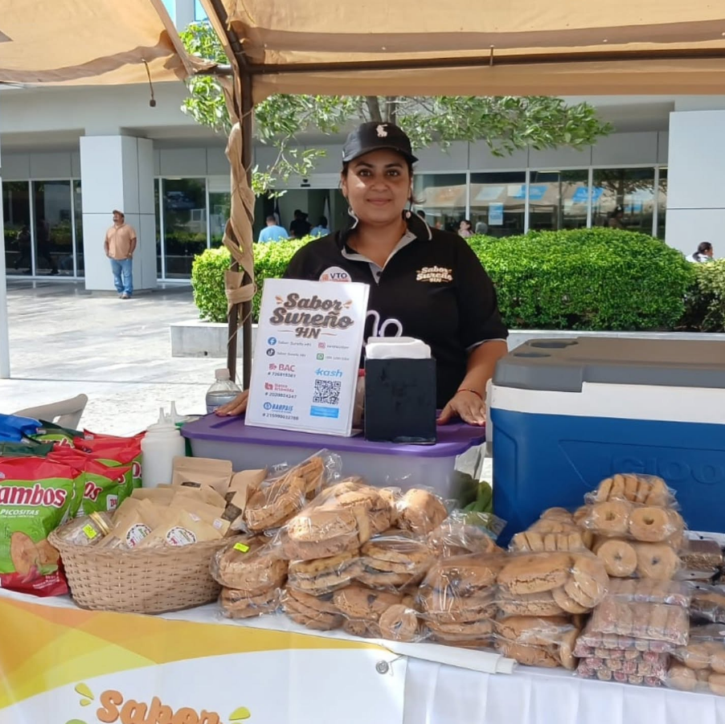
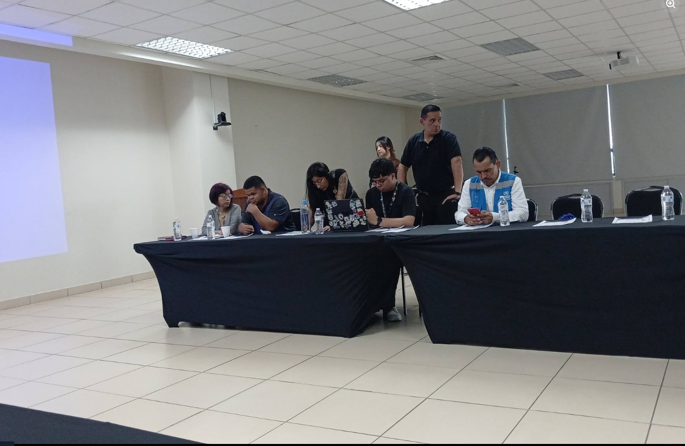

Tu tiempo y talento pueden transformar vidas
Ayudar en un voluntariado trasciende el simple acto de dar; es compartir lo mejor de nosotros para transformar nuestra comunidad. Al dedicar tu tiempo y talento, te conviertes en un puente de esperanza para quienes más lo necesitan, demostrándoles con acciones que no están solos. A cambio de tu esfuerzo, descubres una fuerza interior invaluable y te llevas la inmensa recompensa de saber que, gracias a ti, el mundo de alguien más fue un poco más brillante hoy.
Áreas de Voluntariado

Logística y Eventos
Apóyanos en la organización, montaje y atención durante el Bingo Masol, Masol Fest y celebraciones especiales.

Distribución de Ayuda
Acompáñanos en Misión Esperanza y jornadas de entrega de víveres e insumos a las comunidades vulnerables.

Apoyo Profesional
Si eres médico, psicólogo, maestro o tienes conocimientos técnicos, puedes impartir charlas y talleres preventivos.